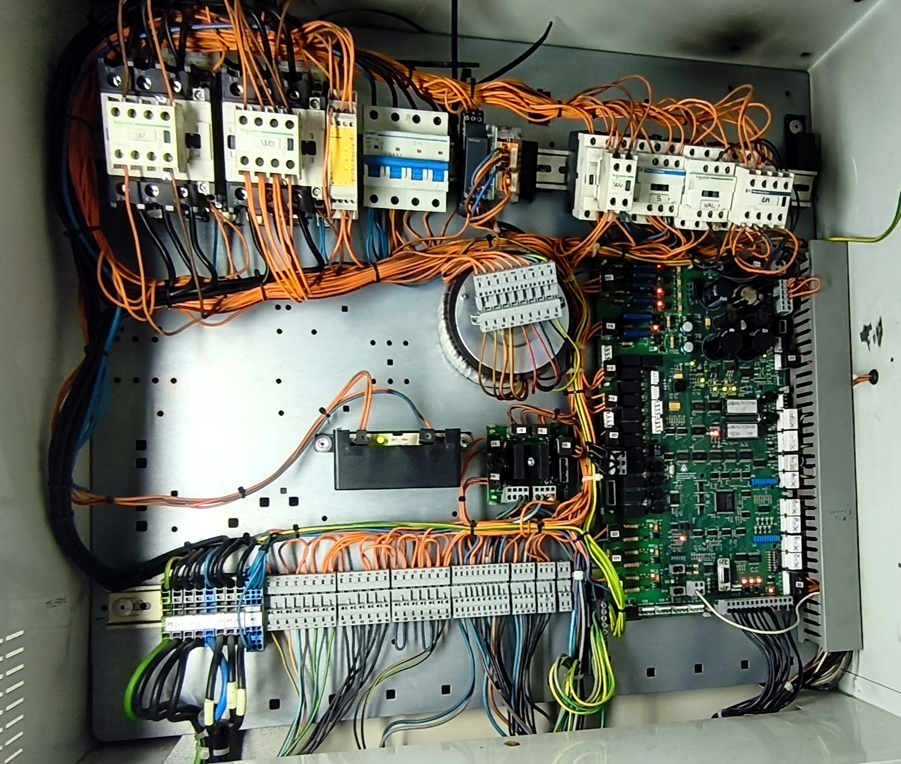

| Estado do LED | Despiste Rápido de Avarias / Componente Aberto |
|---|---|
| 🟢 S41 (ENCL) Desligado |
Falha de Encravamento ou Portas. Bloqueio nos trincos exteriores de piso (C6 - C7) ou no operador da porta de cabina (B5 - B6). |
| 🟢 S40 (PRES) Desligado |
Série de Portas de Piso Aberta. Falha nos contactos de fecho/encosto das portas de piso. Verificar circuito entre os bornes C1 e C2. |
| 🟢 S29 (SEG) Desligado |
Seguranças Gerais Abertas. Corte na cadeia inicial. Verificar Disjuntor IM (4-A1), réguas de poço/máquina (A1-A3) ou componentes da cabina/revisão (B1-B4). |
| Código | Significado / Descrição da Avaria |
|---|---|
| *0: | Sensores de portas. |
| *1: | Falha de contactores. |
| *2: | Inversão de fases, ambos os limites extremos actuados. |
| *3: | Situação de revisão, falha do módulo SR. |
| *4: | Abertura em movimento da série de portas. |
| *5: | Após a chegada ao piso, as portas não abrem. |
| *6: | Erro de contagem de pantalhas. |
| *7: | Falha de encravamento das portas. |
| *8: | Falha na leitura ou detecção de pantalhas pelo fotorruptor, falha do fotorruptor em renivelação. |
| *9: | Abertura da série de seguranças. |
| Circuito / Componente | Bornes de Medição |
|---|---|
| Disjuntor IM | 4 a A1 |
| Stops (C.Máq./Poço/Máquina), Roda Tensora, Amortecedores, Fins de Curso e Limitadores | A1 a A3 |
| Páraquedas, Alongamento de Cabos, Stop de Cabine e Stop de Revisão | B1 a B4 |
| Fecho de Portas de Piso (Contactos de Encosto) | C1 a C2 |
| Encravamento das Portas de Cabine (Operador) | B5 a B6 |
| Encravamento das Portas de Piso (Trincos Exteriores) | C6 a C7 |